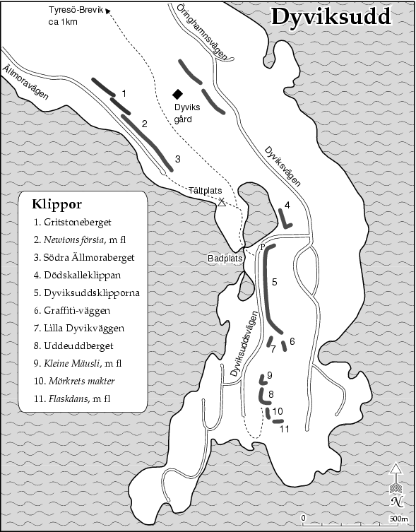
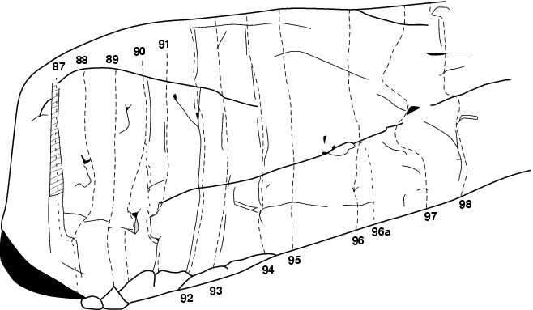

Lat: 59.19231 Long: 18.40541
Kategori:Stockholm
Kategori:Tyresö
Kategori:Sport
Kategori:Trad
500m lång "klippa" uppdelad på fyra partier med ett 100-tal leder.
Denna klippa ligger utmed östra sidan av Dyviksuddsvägen, nästan allra längst ut på Tyresöhalvön. Den är uppdelad i fyra tämligen klart åtskilda delar med en sammanlagd längd av närmare 500 m. Höjden varierar mellan 10–20 m. Stora delar av väggarna inleds med ett överhäng av varierande storlek och antalet lätta leder begränsas därför till ett fåtal. Till dags dato finns här ett 100-tal leder. Dessutom finns några svåra artificiella leder. Klättringen är i huvudsak sprick- och kaminklättring i de lägre graderna (5 och 6) medan de svårare lederna ofta utnyttjar väggarna och överhängen mellan de stora formationerna. Tyvärr är det på grund av den täta snårskogen som växer under klippan svårt att lokalisera lederna från vägen. Lyckas man komma fram till klippan är det dock sällan några problem att hitta rätt led. Dyviksudd har på senare år blivit populärt framför allt bland de duktigare klippklättrarna. Mer än hälften av lederna är svårare än 6+. Dessa leder är till stor del borrbultssäkrade och därmed ofta välsäkrade. De numera klassiska turerna i sexaregistret har däremot sällan ens vanliga bultar och kräver att man kan lägga sina kilar väl för att bli rimligt säkrade.
Väst, mestadels öppet för solen förutom Lord Hård-väggen som är skuggig och kall på vår och höst.
Som för
Dödskalleberget
.
Dyviksudd
Som för
Dödskalleberget
. Klipporna ligger efter vägen, ett par hundra meter längre fram efter en vänsterkrök. En parkeringsficka finns vid klippans början. Parkera under inga omständigheter på mötesplatser eller privata platser. Den naturliga utgångspunkten är den lilla gräshyllan under den stora rödaktiga diedern ( Apokalyps ) ca 200 m efter vänsterkröken som avgränsar klippan åt v. En stig leder upp till denna hylla några m innan en skyltad mötesplats. Diedern är faktiskt synlig ända nere från vägen. Skisserna över klippan är ganska schematiska men bör ändå tjäna som en vägledning fram till klippan och klättringen.
Verkar ständigt vara hotat av klätterförbud. Var diskreta och parkera endast på parkeringsplatsen nedanför klippan.
Klippans norra ände börjar med ett stort överhäng. Sprickan genom detta är Gibbon.
Väggen börjar nästan genomgående med kraftiga överhäng, som gör det svårt att komma åt klättringen ovanför. Många av lederna här är mycket svåra framför allt i starten förbi överhänget. Ca 15m in på klippan finns den första tydliga linjen, Sly, en bred spricka som går upp mot ett överhäng. I väggen tv finns en vacker spricka i perfekt klippa som tunnar ut och försvinner ett par m under toppen. Detta är numera Navigare.
[[bild:dyviksudd001.jpg|thumb|right|225px|Kalkylerad fisk Foto:
Jonas Ahlman
]]
Bergets mest imponerande vägg. Här ligger ett antal extremt svåra turer samt några lite mänskligare. {| |- valign="top" | width="250px" |
Fortsätter man 70m i Lord Hård-väggens förlängning dyker ytterligare en liten vägg upp. Väggen ligger öppet och fint och fångar solen lite tidigare än huvudklipporna. Av någon outgrundlig anledning har någon sprayat diverse klotter på botten av väggen. Diverse möjligheter till korta leder och boulderproblem finns för den hugade. Två problem finns ca 15m tv om Prima materia: Humle, 7 (B) (Johan Luhr -89), som följer en spricka och Dumle, 7 (B) (Johan Luhr -89), alldeles th.
Klipparti inne i skogen, ca 50m th om Lord Hård-väggen längs vägen. Den tydligaste formationen är diedern där Crank, catch or disappear går.
Copyright (C) Permission is granted to copy, distribute and/or modify this document under the terms of the GNU Free Documentation License, Version 1.3